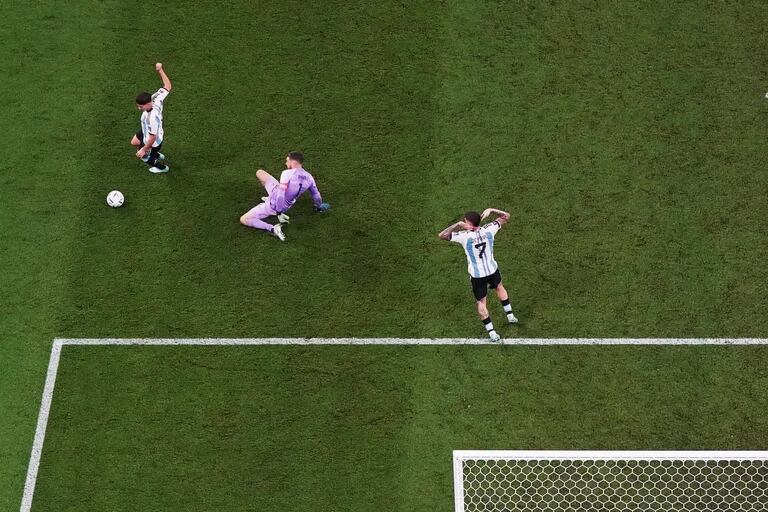
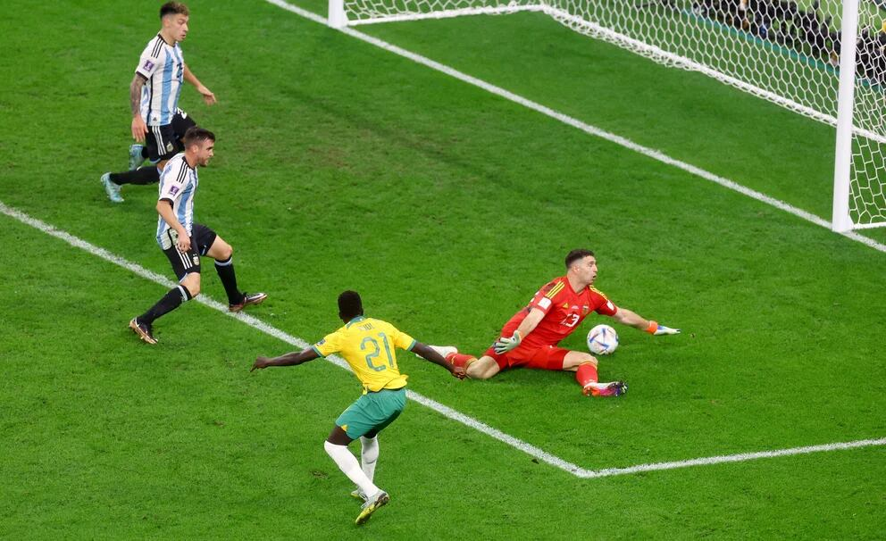

Octavos frente a Australia:
El partido estaba trabado, pero otra vez apareció el gran Messi para abrir el marcador. Luego en el segundo tiempo, fue todo de Argentina. Julián Álvarez en una avivada logró anotar el segundo. En un tiro que el Dibu tenía controlado pero se desvío en Enzo Fernández, llegó el descuento de ellos. Se sufrió más de la cuenta. Sobre el final del partido el Dibu salvó el empate Australiano y le dió el pase a Cuartos a Argentina.
 